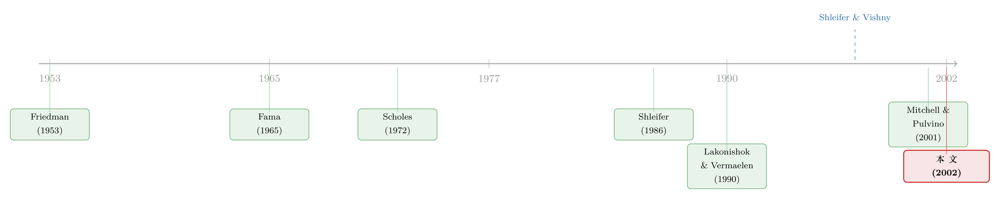

无风险的钱没人捡，因为捡钱的人手太短——并购套利里的「有限套利」
本文读的是 Baker & Savaşoglu (2002, Journal of Financial Economics)：一个分散化的并购套利（risk arbitrage）组合，在 1981–1996 年间每月能赚 0.6–0.9% 的超额收益；而这笔钱并非「免费午餐」，它恰恰来自套利本身的「有限」——完成风险越高、标的越大、套利资本越少，收益就越高。
1 引言：教科书里那笔捡不起来的钱
先讲一个所有人都听过、却几乎没人较真的故事。
一家公司宣布要被收购，开价比市价高出三成。按理说，从宣布的那一刻起，目标公司的股价就该「一步到位」地跳到反映收购条款的水平——这是有效市场最朴素的承诺：信息一旦公开，价格立刻吸收。可现实里偏偏不是。宣布之后，目标股价往往只涨到一个略低于收购价的位置，留下一道缝。这道缝，就是专业的「并购套利者」（risk arbitrageur，又译风险套利、merger arb）赖以为生的东西：买进目标公司股票，等着交易完成，吃掉这道差价。
问题来了。如果这真是「稳赚」的钱，为什么它一直留在那里、没被瞬间抹平？
这正是 Baker 和 Savaşoglu 这篇 2002 年 JFE 想回答的问题。他们的答案，用一句话概括，是 Shleifer 和 Vishny (1997) 那个著名的标签——有限套利 (limits of arbitrage)：钱确实在那里，但能去捡它的人，手太短了。
注意一个术语陷阱：这里的「套利」并不是教科书里那种「无风险、无资本、稳赚」的套利。并购套利者面对的是实打实的完成风险 (completion risk)——交易可能告吹。所以它本质上是在「卖保险」，赚的是风险溢价，而不是无风险利润。
2 张力：到底是「免费午餐」，还是「风险补偿」？
文章真正有意思的地方，在于它把一个老问题逼到了墙角。
目标公司股价里那道缝，可以有两种完全相反的解读。
第一种解读：市场是无效的，这道缝是白送的钱，谁去捡谁赚。第二种解读：市场是有效的，这道缝只是对「交易可能失败」这一风险的公允定价，套利者赚的每一分钱都对应着他承担的风险。
过去的文献基本停在第一种解读上。Lakonishok 和 Vermaelen (1990) 研究回购要约、Larcker 和 Lys (1987)、Dukes 等 (1992)、Karolyi 和 Shannon (1999) 研究现金要约，全都发现了「异常利润」，而且数字大得惊人。但这些研究有个共同的软肋：它们大多是事件研究式地盯住单笔交易的收益，没把这些头寸组合起来、放到一个像样的资产定价框架里去问一句——扣掉系统性风险之后，还剩多少？
Baker 和 Savaşoglu 的第一步，就是把这个问题做干净。
3 第一步：先把「超额收益」量准
他们从 Securities Data Company（SDC）数据库里，捞出 1981–1996 年间所有目标和收购方都是上市公司、且目标公司在 CRSP 有记录的并购要约，经过层层筛选，最后得到 1,901 笔纯现金或纯股票交易（1,335 笔现金、566 笔股票），覆盖 1,556 家目标公司。
接着，他们把每一笔交易都做成一个「如果交易按原条款完成、就能拿到固定回报」的套利头寸，再把所有活跃头寸等权或市值加权地揉成一个组合，逐日计算收益、按月复利，得到 1981 年 1 月到 1996 年 12 月共 192 个月度组合收益。
对现金交易，头寸最简单——直接买目标股票，收益就是目标股票的收益：
$$r_{it} = r_{Tit}$$
股票交易则要复杂一层。收购方用固定数量 \(d\) 的自家股票来换目标公司每一股，所以套利者必须买一股目标、同时做空 \(d\) 股收购方，才能锁定一个「与收购方未来股价无关」的固定回报。这笔头寸的日收益有三块：目标股票的收益、做空收购方的收益、以及做空所得的无风险利息（论文假设套利者拿不到卖空所得，因此这一块被扣掉）：
$$r_{it} = r_{Tit} - (r_{Ait} - r_{ft})\, d\, \frac{P_{Ait-1}}{P_{Tit-1}}$$
把每天的组合收益按月复利起来，就得到月度组合收益：
$$R = \left[\prod \left(1 + \sum_{i=\text{active}} w_{it}\, r_{it}\right)\right] - 1$$
然后拿这个组合去跟两把尺子比：资本资产定价模型 (CAPM) 和 Fama-French 三因子模型 (Fama and French, 1996)。
结果是：这个组合确实跑赢了两个基准，月度超额收益（截距项 alpha）落在 0.6–0.9% 这个区间。但请注意石川式的一个转折——它没那么「夸张」。比起早期那些事件研究里动辄翻倍的「异常利润」，这个量级要克制得多；甚至在某一个设定下，截距在 10% 的水平上都不显著。
这是个微妙的姿态：他们一只手确认了「钱是真的」，另一只手又把这笔钱的规模拉回了地面。和他们同期、独立完成的 Mitchell 和 Pulvino (2001) 用同样的组合方法，在 1963–1999 年的样本里得到约 1% 每月的毛收益，量级相近。
把单笔交易揉成组合，意义不只是「平滑」。它让作者能够第一次严肃地回答：这笔收益里有多少是 beta、有多少是真正的 alpha？答案是——分散掉个别交易的风险之后，组合层面的系统性风险很低，所以这 0.6–0.9% 大体是「干净」的超额收益。
4 但真正关键的一步：为什么这笔钱捡不光？
确认了钱是真的，下一个、也是更要命的问题立刻冒出来：既然有钱，为什么没被套利者一拥而上、瞬间抹平？
这就要回到「有限套利」的两块基石上了。
第一块基石来自 Friedman (1953) 和 Fama (1965) 的经典论证：只要有无穷多个小投资者，每个人只在某个特异风险（idiosyncratic risk）上押一丁点儿，他们整体上就近似风险中性，会把价格推到期望收益处。可这个机制在并购里失灵了——让一个普通人不经金融中介、就把自家财富的一小撮投进一个分散化的目标股票组合，这事不现实。哪怕一点点固定交易成本，除以「个人财富的一个边际零头」，都会变成高得离谱的百分比成本。
第二块基石：当错误定价的证券有一个完美且定价正确的替代品时，哪怕只有少数套利者，也能无风险地把价格逼回基本面。这正是 Scholes (1972) 和 Shleifer (1986) 关于「需求曲线是否向下倾斜」之争的核心，Wurgler 和 Zhuravskaya (2001) 后来证明，一只股票被纳入 S&P 500 时受到的需求冲击，恰恰取决于它有没有好的替代品。可在并购里，交易完成的特异风险通常无法对冲——你找不到一个「完美替代品」来锁定这道缝。
两块基石一塌，结论就出来了：在并购市场，价格不是由无穷多个风险中性的小投资者决定的，而是由少数有限的、要承担风险的、还缺资本的套利者决定的。于是有了两条核心预测：
预测 1：并购套利的收益，取决于卖压 (selling pressure) 与完成风险。
预测 2：并购套利的收益，取决于套利者的资本。
到这里，故事的反转就完成了——那道缝不是市场的失误，而是有限套利的「均衡价格」。它既证明了 Friedman-Fama 式的无摩擦套利在这里不成立，又恰恰因为这种不成立，才让收益与「完成风险、卖压、资本」之间产生了可检验的横截面关系。（关于「无风险的钱为什么没人捡」这个母题，也可参见《无风险的钱没人捡，是因为捡它的人也会怕》与《无风险的钱就在眼前，他们却宁愿再等等》。）
5 模型：把「卖压」写成一个价格折扣
文章用一个极简的两状态模型，把上面的直觉钉成了一道方程。值得一步步看，因为正是这道方程给了后面的实证检验「该回归什么」的指引。
设定。一笔并购要约只有两种结局：以概率 \(p\) 成功，目标股东拿到 \(1+\pi\)（其中 \(\pi\) 是收购溢价）；以概率 \(1-p\) 失败，目标回到价值 \(1\)。同时假设有一批目标股东不想承担完成风险，要卖出总共 \(X\) 股（\(X\) 外生给定）。作者分三种情形给目标股票定价。
情形一：无穷多个无交易成本的小投资者。 每人只在这个特异赌局里押一点点，因此不要求任何风险补偿，价格等于目标股票的期望收益：
$$P_T = 1 + p\pi \tag{1}$$
这正是有效市场的「应然」价格。
情形二：小投资者面对交易成本。 固定成本 \(c\) 无法摊到无穷多人头上，必须由每个交易者各自承担，于是相对于其小头寸，\(c\) 可以很大：
$$P_T = 1 + p\pi - c \tag{2}$$
情形三：有限的 \(A\) 个套利者（无交易成本）。 假设套利者是均值-方差效用最大化者，绝对风险厌恶系数为 \(\gamma\)。因为人数有限，他们不得不承担完成风险；要让他们吃下 \(X\) 股，卖方就得给一个风险溢价——哪怕这是特异风险：
第二项就是为了补偿这 \(A\) 个套利者所承担的特异风险、而必须给出的价格折扣。由此，期望超额收益为 \(r/P_T\)，其中
$$r \equiv \frac{X}{A}\,\gamma\, p(1-p)\pi^2$$
怎么读这道方程？ 它一口气讲清了四件事：超额收益随卖压 \(X\) 上升、随溢价 \(\pi\) 上升、随风险厌恶 \(\gamma\) 上升、随套利者人数 \(A\) 下降；而它对成功概率 \(p\) 的依赖是非线性的——\(p(1-p)\) 在 \(p=0.5\) 时最大，意味着「最说不准成败」的交易，完成风险最高、要求的补偿也最大。
到底是情形二（成本决定）还是情形三（套利者风险决定）说了算？作者坦言这是个经验问题：如果 \(r < c\)，价格由交易成本（2）式决定；反之由（3）式决定。如果是（3）式成立，那么收益就该和卖压、溢价、风险厌恶系数正相关，和套利者人数负相关——这恰好是后面要去数据里找的东西。
模型刻意留白了许多真实风险：条款被修订、半路杀出竞争者、交易拖延、做空被强制平仓。作者的处理是诚实的——能度量的（如修订频率、是否首发要约）就度量，度量不了的（如「延迟」的事前概率）就直说「因为没有好的代理变量，被迫从实证模型里略去」。
6 实证：把模型的三个旋钮，逐一拧给数据看
模型说收益由「完成风险、卖压、套利资本」三个旋钮决定。作者就一个个去数据里找证据。
旋钮一：完成风险。 完成风险由两部分构成：成功概率 \(p\) 向 0.5 靠拢、以及成败之间的支付差 \(\pi\) 变大。怎么估 \(p\)？作者用「并购结局对收购方态度（友好/敌意）的回归」来预测——和 Walkling (1985)、Schwert (2000) 一样，他们发现收购方态度是预测并购成败的最佳单一变量。而 \(\pi\) 的代理，则用宣布后按目标公司市值缩放的收购溢价。结果与预测 1 一致：超额收益随完成风险上升。
旋钮二：卖压（用标的规模代理）。 宣布之后目标公司的规模，可以代理「目标股东抛售的美元金额」。结果同样支持：超额收益随标的规模上升——大交易意味着更大的卖压被压到有限的套利者头上，于是要更高的补偿。
旋钮三：套利资本。 这是最巧、也最弱的一块。作者用机构持仓数据来识别谁是套利者：并购套利意味着在宣布后建立目标公司多头，所以他们把「经常从零持仓跳到正持仓」的机构定义为套利者，再把这些机构每季度的总股票持仓加总，作为「套利资本」的度量。预测是：当这个资本下降时，随后的收益应该上升。数据方向上确实如此——但这第三个横截面结果，统计上不如前两个那么硬。
这三块拼在一起，构成了一个相当完整的「有限套利」证据链：收益不是天上掉的，它系统性地随着模型里那几个旋钮变动。
7 文献脉络
把这条线索拉直来看，会更清楚这篇文章站在哪里。
最上游，是 Friedman (1953) 与 Fama (1965) 那套「无穷多小套利者 ⇒ 近似风险中性 ⇒ 价格 = 基本面」的乐观叙事。紧接着，Scholes (1972) 和 Shleifer (1986) 捅破了一个口子：如果没有完美替代品，股票的需求曲线可以向下倾斜，价格会被卖压推动。
真正的转折点是 Shleifer 和 Vishny (1997) 的「有限套利」——他们指出，套利者本身受代理与信息成本的约束，能筹到的资本是有限的；Merton 和 Perold (1993)、Froot 和 Stein (1998)、以及 Stein (1999) 进一步说明了资本约束的「流量成本」与「存量成本」从何而来。与此平行，DeLong 等 (1990) 的噪声交易者风险、Froot 和 Dabora (1999) 对 Royal Dutch/Shell「孪生股」长期背离的记录，都在反复敲打同一个钉子：套利远不是无风险的。

在并购这个具体战场上，早期的事件研究（Lakonishok 和 Vermaelen, 1990；Larcker 和 Lys, 1987；Dukes 等, 1992）记录了「异常利润」却没解释它为何不被抹平。理论这边，Cornelli 和 Li (2001) 关注套利者作为「知情大股东」的主动角色，但不预测平均交易上的异常利润。Baker 和 Savaşoglu 的位置因此很清晰：他们聚焦边际套利者的收益，用组合方法把超额收益量准，再用一个极简的卖压模型，把这笔收益与完成风险、卖压、资本一一对应起来——这正是把 Shleifer-Vishny 的抽象框架，落到一个干净可测的市场上。几乎同时，Mitchell 和 Pulvino (2001) 用相同的组合思路给出了独立的、互相印证的证据。
8 评论与延伸（Q&A + 研究方向）
Q：这跟「教科书套利」到底差在哪？为什么还叫套利？
教科书套利是「两个完全相同的资产卖不同价」——无资本、无风险、稳赚。并购套利里，目标股票和「未来换到的收购方股票」只是相似而非相同，中间隔着一个会失败的交易（完成风险），而且建仓需要真金白银的资本。所以它本质是在卖保险、赚风险溢价。叫「套利」是行业习惯，作者特意点明了这层区别。
Q：0.6–0.9% 每月听着很高，是不是又一个「纸面富贵」？
作者自己就很克制。第一，这是扣掉 CAPM 和三因子 beta 后的 alpha，组合层面系统性风险很低；第二，他们承认在某个设定下截距
10%都不显著；第三，模型刻意略去了交易拖延、强制平仓等真实成本。Mitchell 和 Pulvino (2001) 进一步显示，一旦给组合加上「单笔交易投资上限」并因此持有大量现金，毛收益会被砍掉约三分之二。所以这是真收益，但别当成随手可得的钱。
Q：用「会失败」的交易做空收购方，做空成本和强制平仓难道不致命吗？
这恰恰是模型的软肋之一，作者也坦承。股票交易里做空收购方面临卖空成本，以及在价格背离时被券商强制召回的风险——这些大体是特异风险，会在更一般的（3）式里被定价，却没法进入简化模型。这也是为什么他们同时报告了「只含现金交易」的组合做稳健性。
Q：把「从零跳到正持仓的机构」定义为套利者，会不会太粗糙？
会，而且作者也承认第三个结果统计上最弱。这个定义可能把一部分普通的事件驱动型机构、甚至偶发建仓误判进来，也可能漏掉用衍生品或不申报渠道操作的真套利者。「套利资本」的度量误差，很可能就是它显著性偏弱的原因。
Q：成功概率 \(p\) 用「收购方态度」来估，可靠吗？
这是文献里的标准做法，Walkling (1985) 和 Schwert (2000) 都发现态度（友好 vs. 敌意）是预测成败的最佳单一变量。但它毕竟是个粗糙的二元代理，真实的 \(p\) 还取决于反垄断、融资、监管等一堆因素。好在模型只需要 \(p\) 的「事前排序」大致正确，就能检验 \(p(1-p)\) 这个非线性形状。
Q：这篇对「市场是否有效」这个老争论，到底站哪边？
它给出的是一个调和式的答案：价格里那道缝既不是纯粹的无效（白送的钱），也不是纯粹的有效（无摩擦定价），而是「有限套利」下的均衡——市场在套利者能力的约束内是「有效」的，超额收益正是这种约束的影子价格。这比简单地喊「有效」或「无效」要深一层。
几个可能的研究问题与提案
1）把「套利资本」换成更干净的度量，重做预测 2。 【经济故事】预测 2（收益随套利资本下降而上升）是本文最弱的一环，瓶颈在「谁是套利者」的识别。如果能用并购套利对冲基金的实际 AUM、或专门的事件驱动基金资金流来度量资本，预测 2 也许能被检验得更硬。 【可行性】中。需要对冲基金数据库（如 HFR、Lipper TASS）按策略分类，识别 merger-arb / event-driven 基金的资金流；识别策略是把「资本冲击」当作准外生的供给变动。难点是基金分类噪声大、且资金流本身可能内生于收益。
2）把同一框架搬到公司债 / 信用市场的并购里。 【经济故事】并购同样冲击目标公司的债券（杠杆变化、控制权条款），而公司债市场的流动性更差、做市商资本约束更紧，「有限套利」的故事在这里可能更强。完成风险对债券的定价折扣，或许比股票更大。 【可行性】中。需要 TRACE 的公司债成交数据匹配 SDC 并购样本；识别上可沿用本文的「完成风险 × 卖压」分解，并额外利用债券流动性度量。挑战是公司债成交稀疏、价格噪声大。（这条线与《央行没买你的债，你却也跟着发了债》所代表的「资本结构与外部冲击」视角天然相邻。）
3）外资持有人是不是并购套利资本的「边际供给者」？ 【经济故事】本文把套利资本当成一个总量。但如果跨境套利基金在某些时期撤出（如本国危机、资本管制收紧），目标股票的卖压补偿就该上升。外资作为边际套利者的进出，可能解释收益的时间序列波动。 【可行性】中偏低。需要按国别拆分的机构持仓（如 FactSet/13F 配合国别标识），并找到外资进出的外生冲击（如汇率危机、跨境税收变动）。识别干净与否，取决于能否找到只影响外资供给、不影响交易基本面的工具。
4）用「做空潜力」重新审视卖压渠道。 【经济故事】股票交易里套利者必须做空收购方，做空难度本身就是套利资本的约束之一。如果某些目标/收购方更难被做空，套利者要的补偿应更高。这把本文的「资本约束」具体化到了做空市场。 【可行性】高。可用券源数量、借券费率（如 Markit/IHS 的 securities lending 数据）匹配并购样本；识别上把借券成本当作套利摩擦的代理。相关思路可参考《想躲开套利者的「做空」，就用现金买下它》。
我的判断。 这篇文章的贡献，不在于「发现并购套利能赚钱」——这早就有人说过；而在于它把一笔被反复观察、却语焉不详的「异常利润」，第一次放进了有限套利的均衡框架里，并用一个极简模型导出了三个可检验的横截面关系，再逐一对上了数据。它漂亮地示范了：当你既能把超额收益量准（组合方法），又能给它一个结构化的解释（卖压模型），「市场有没有效」这个口水仗就能被推进成一个可证伪的实证命题。
对识别，我有三点担忧。其一，「套利资本」的度量最弱，「从零跳到正持仓」的机构定义既可能混入噪声、又可能漏掉真套利者，这直接拖累了预测 2 的说服力。其二，完成概率与溢价的内生性——同一笔交易的 \(p\) 和 \(\pi\) 很可能由共同的基本面（行业景气、反垄断环境）驱动，回归里很难完全剥离。其三，模型把卖压 \(X\) 当外生，但卖压本身可能和完成风险相关（越可能失败、想跑的股东越多），这会让（3）式的几个旋钮纠缠在一起。
我接下来最想看到的，是把「套利资本」做成真正外生的供给冲击——无论是基金资金流、跨境资本管制，还是做空市场的券源约束——去干净地检验那条最弱的预测 2。如果资本渠道能被钉死，「有限套利」就从一个解释框架，升级成了一个有因果含义的市场摩擦理论。
参考文献
- Cornelli, F., Li, D. (2001). Risk arbitrage in takeovers. Review of Financial Studies, forthcoming.
- DeLong, J. B., Shleifer, A., Summers, L. H., Waldmann, R. J. (1990). Noise trader risk in financial markets. Journal of Political Economy 98, 703–738.
- Dukes, W. P., Frohlich, C. J., Ma, C. K. (1992). Risk arbitrage in tender offers. Journal of Portfolio Management 18, 47–55.
- Fama, E. F. (1965). The behavior of stock market prices. Journal of Business 38, 35–105.
- Fama, E. F., French, K. (1996). Multifactor explanations of asset pricing anomalies. Journal of Finance 51, 55–84.
- Friedman, M. (1953). The case for flexible exchange rates. In Essays in Positive Economics. Chicago University Press, 157–203.
- Froot, K., Dabora, E. (1999). How are stock prices affected by the location of trade? Journal of Financial Economics 53, 189–216.
- Froot, K., Stein, J. (1998). Risk management, capital budgeting, and capital structure policy for financial institutions: an integrated approach. Journal of Financial Economics 47, 55–82.
- Karolyi, A., Shannon, J. (1999). Where's the risk in risk arbitrage? Canadian Investment Review 12, 12–18.
- Lakonishok, J., Vermaelen, T. (1990). Anomalous price behavior around repurchase tender offers. Journal of Finance 45, 455–477.
- Larcker, D., Lys, T. (1987). An empirical analysis of the incentives to engage in costly information acquisition. Journal of Financial Economics 18, 111–126.
- Merton, R., Perold, A. (1993). The theory of risk capital in financial firms. Journal of Applied Corporate Finance 5, 16–32.
- Mitchell, M., Pulvino, T. (2001). Characteristics of risk in risk arbitrage. Journal of Finance 56, 2135–2176.
- Scholes, M. (1972). The market for securities: substitution versus price pressure and effects of information on share prices. Journal of Business 45, 179–211.
- Schwert, G. W. (2000). Hostility in takeovers: in the eye of the beholder. Journal of Finance 55, 2599–2640.
- Shleifer, A. (1986). Do demand curves for stocks slope down? Journal of Finance 41, 579–590.
- Shleifer, A., Vishny, R. W. (1997). The limits of arbitrage. Journal of Finance 52, 35–55.
- Stein, J. (1999). Comment on the pricing of U.S. catastrophe reinsurance. In The Financing of Catastrophe Insurance. MIT Press, 227–231.
- Walkling, R. A. (1985). Predicting tender offer success: a logistic analysis. Journal of Financial and Quantitative Analysis 20, 461–478.
- Wurgler, J., Zhuravskaya, K. (2001). Does arbitrage flatten demand curves for stocks? Journal of Business, forthcoming.